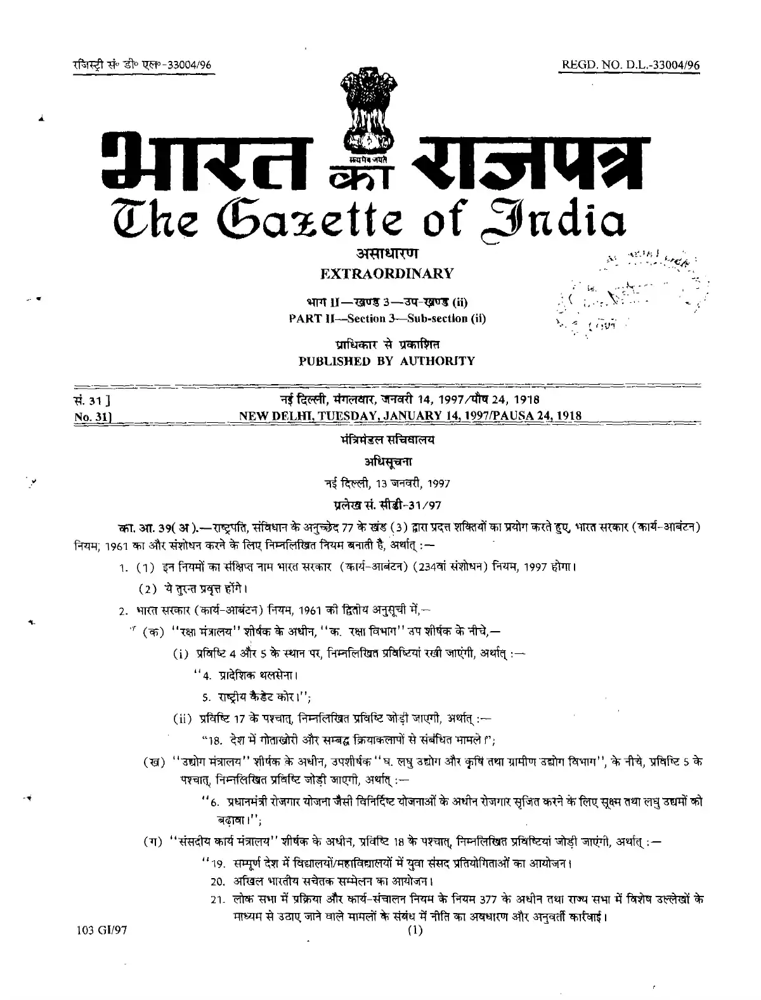
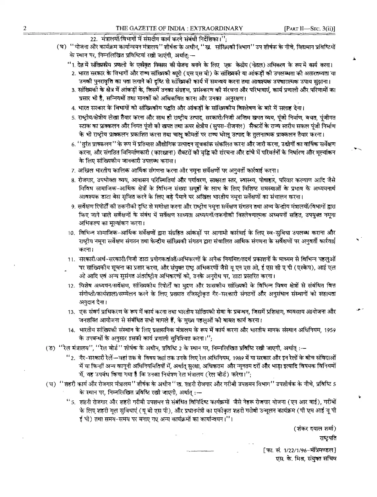
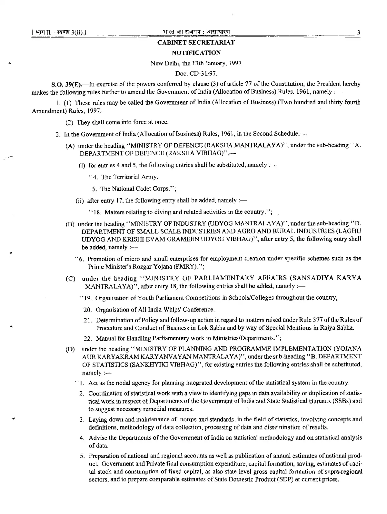
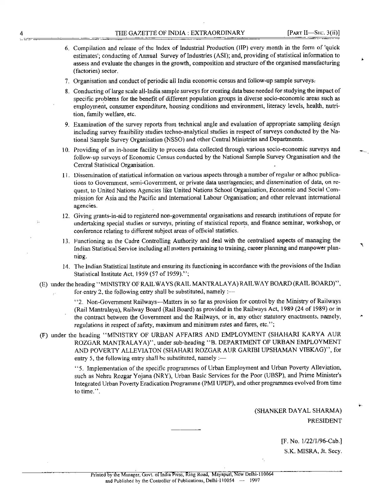

Amendment #234 (S.O. 39(E), 1997)
7 changes: 0 to the First Schedule, 7 to the Second Schedule. 7 applied
What it did to the ministries
- grewMinistry of Parliamentary Affairs grows from 18 to 22 subjects change 4 · histories: Parliamentary Affairs
- grewMinistry of Planning and Programme Implementation grows from 8 to 14 subjects change 5 · histories: Planning and Programme Implementation
The order, page by page
Page 1 of 4

Page 2 of 4

Page 3 of 4

12345Schedule 2 › MINISTRY OF DEFENCE › DEPARTMENT OF DEFENCE › entry 4; Schedule 2 › MINISTRY OF DEFENCE › DEPARTMENT OF DEFENCE › entry 5
- 4. The Territorial Army.
- 5. The National Cadet Corps.
applied at schedule 2 › ministry MINISTRY OF DEFENCE (RANSHA MAN TRALAYA) › department A › entry 4 in the Rules after #234
after Schedule 2 › MINISTRY OF DEFENCE › DEPARTMENT OF DEFENCE › entry 17
- 18. Matters relating to diving and related activities in the country.
applied at schedule 2 › ministry MINISTRY OF DEFENCE (RANSHA MAN TRALAYA) › department A › entry 18 in the Rules after #234
after Schedule 2 › MINISTRY OF INDUSTRY › DEPARTMENT OF SMALL SCALE INDUSTRIES AND AGRO AND RURAL INDUSTRIES › entry 5
- 6. Promotion of micro and small enterprises for employment creation under specific schemes such as the Prime Minister's Rozgar Yojana (PMRY).
applied at schedule 2 › ministry MINISTRY OF INDUSTRY › department E › entry 6 in the Rules after #234
after Schedule 2 › MINISTRY OF PARLIAMENTARY AFFAIRS › entry 18
- 19. Organisation of Youth Parliament Competitions in Schools/Colleges throughout the country
- 20. Organisation of All India Whips' Conference.
- 21. Determination of Policy and follow-up action in regard to matters raised under Rule 377 of the Rules of Procedure and Conduct of Business in Lok Sabha and by way of Special Mentions in Rajya Sabha.
- 22. Manual for Handling Parliamentary work in Ministries/Departments.
applied at schedule 2 › ministry MINISTRY OF PARLIAMENTARY AFFAIRS › entry 19 in the Rules after #234
Schedule 2 › MINISTRY OF PLANNING AND PROGRAMME IMPLEMENTATION › DEPARTMENT OF STATISTICS
- 1. Act as the nodal agency for planning integrated development of the statistical system in the country.
- 2. Coordination of statistical work with a view to identifying gaps in data availability or duplication of statistical work in respect of Departments of the Government of India and State Statistical Bureaux (SSBs) and to suggest necessary remedial measures. 1
- 3. Laying down and maintenance of norms and standards, in the field of statistics, involving concepts and definitions, methodology of data collection, processing of data and dissemination of results.
- 4. Advise the Departments of the Government of India on statistical methodology and on statistical analysis of data.
- 5. Preparation of national and regional accounts as well as publication of annual estimates of national product, Government and Private final consumption expenditure, capital formation, saving, estimates of capital stock and consumption of fixed capital, as also state level gross capital formation of…
- 6. Compilation and release of the Index of Industrial Production (IIP) every month in the form of 'quick estimates'; conducting of Annual Survey of Industries (ASI); and, providing of statistical information to assess and evaluate the changes in the growth, composition and structure of the organised…
and 8 more
- 7. Organisation and conduct of periodic all India economic census and follow-up sample surveys:
- 8. Conducting of large scale all-India sample surveys for creating data base needed for studying the impact of specific problems for the benefit of different population groups in diverse socio-economic areas such as employment, consumer expenditure, housing conditions and environment, literacy…
- 9. Examination of the survey reports from technical angle and evaluation of appropriate sampling design including survey feasibility studies techno-analytical studies in respect of surveys conducted by the National Sample Survey Organisation (NSSO) and other Central Ministries and Departments.
- 10. Providing of an in-house facility to process data collected through various socio-economic surveys and follow-up surveys of Economic Census conducted by the National Sample Survey Organisation and the Central Statistical Organisation.
- 11. Dissemination of statistical information on various aspects through a number of regular or adhoc publications to Government, semi-Government, or private data user/agencies; and dissemination of data, on request, to United Nations Agencies like United Nations School Organisation, Economic and…
- 12. Giving grants-in-aid to registered non-governmental organisations and research institutions of repute for undertaking special studies or surveys, printing of statistical reports, and finance seminar, workshop, or conference relating to different subject areas of official statistics.
- 13. Functioning as the Cadre Controlling Authority and deal with the centralised aspects of managing the Indian Statistical Service including all matters pertaining to training, career planning and manpower planning.
- 14. The Indian Statistical Institute and ensuring its functioning in accordance with the provisions of the Indian Statistical Institute Act, 1959 (57 of 1959).
applied at schedule 2 › ministry MINISTRY OF PLANNING AND PROGRAMME IMPLEMENTATION › department B in the Rules after #234
read page break
Page 4 of 4

67Schedule 2 › MINISTRY OF RAILWAYS (RAIL MANTRALAYA) RAILWAY BOARD › entry 2
- 2. Non-Government Railways-Matters in so far as provision for control by the Ministry of Railways (Rail Mantralaya), Railway Board (Rail Board) as provided in the Railways Act, 1989 (24 of 1989) or in the contract between the Government and the Railways, or in, any other statutory enactments, namely…
applied at schedule 2 › ministry Ministry of Railways (Rail Mantralaya), Railway Board (Rail Board) › entry 2 in the Rules after #234
Schedule 2 › MINISTRY OF URBAN AFFAIRS AND EMPLOYMENT › DEPARTMENT OF URBAN EMPLOYMENT AND POVERTY ALLEVIATON › entry 5
- 5. Implementation of the specific programmes of Urban Employment and Urban Poverty Alleviation such as Nehru Rozgar Yojana (NRY), Urban Basic Services for the Poor (UBSP), and Prime Minister's Integrated Urban Poverty Eradication Programme (PMI UPEP), and other programmes evolved from time to time.
applied at schedule 2 › ministry MINISTRY OF URBAN AFFAIRS AND EMPLOYMENT › department B › entry 5 in the Rules after #234
states inferred loose
How this document was read
Changes placed by an inference rule
| Change | Rule | Status | What |
|---|---|---|---|
| 7 | loose | accepted | change 7: department DEPARTMENT OF URBAN EMPLOYMENT AND POVERTY ALLEVIATON taken for department DEPARTMENT OF URBAN EMPLOYMENT AND POVERTY ALLEVATION, named loosely |
From the Government of India (Allocation of Business) Rules, 1961 and their amendments, as published by the Cabinet Secretariat (cabsec.gov.in), read by orgpedia. The readings of the older scanned gazettes have known gaps.